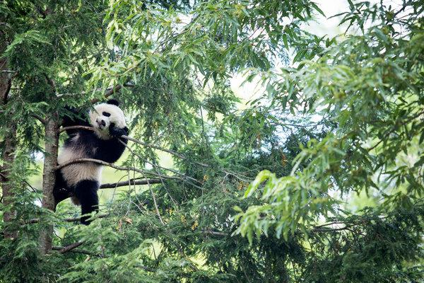
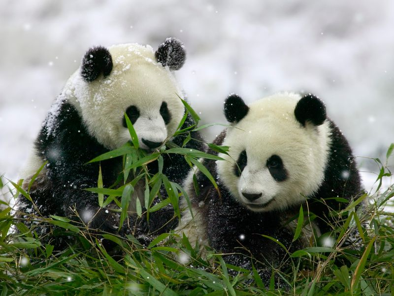
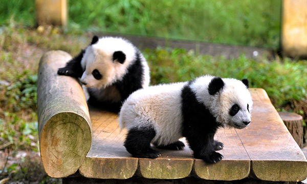

Where can you find a Panda?

In the wild, giant pandas are only found in remote, mountainous reigons of central China, in Sichuan, Shaanxi, and Gansu provinces, according to the San Diego Zoo. In this area, between 5,000 and 10,000 feet elevation (1,524 - 3,0480m), are the cool, wet bamboo forests that giant panda's call home, The large bears make their dens from hollowed-out logs or stumps of conifer trees found within the forest.
Panda Life.
Giant Pandas are mostly loners. They dislike being around other pandas so much that they have a heightened sense of smell that lets them know when another panda is nearby so it can be avoided, according to the National Geographic. If they do come in contact with one another they'll growl, swat and bite each other until one gives up and leaves. On average, a giant panda's territory is about 1.9 square miles (5 square kilometers). To mark their territory, giant pandas secrete a waxy scent marker from a scent gland underneath their tail. Other giant pandas can likely tell the sex, age, reproductive condition, social status and more by sniffing the potent marker. The only time that giant pandas seek each other out is during their spring mating season. Males will use their sensitive smelling ability to sniff out a female when ready to mate, Females mate every two to three years.
Panda Conservation.
Traditional threats to pandas such as poaching appear to be declining, but large-scale disturbances including mining, hydro - power, tourism and infrastructure construction are becoming more severe. WWF's 2015 - 2025 giant Panda conservation strategy sets the course for panda protection efforts over the next decade and will focus on improving panda habitat in a manner that balances conservation with local sustainable development. WFF will cooperate with the government as well as working with partners and the public to protect key habitats and ensure a sustainable wild giant panda population, and benefit local communities.
  